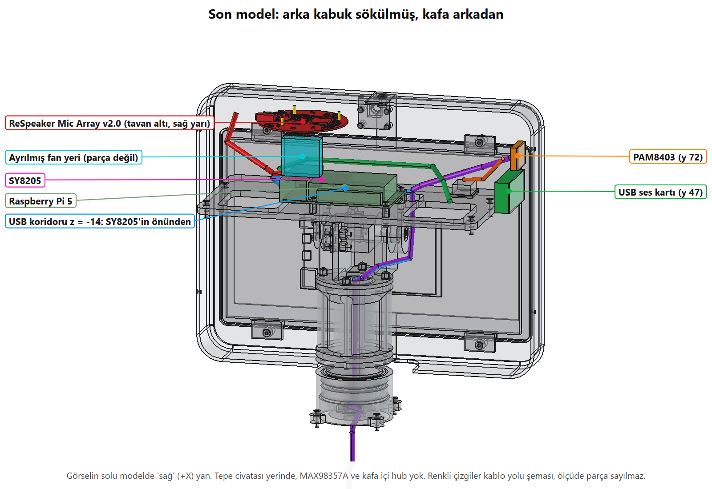
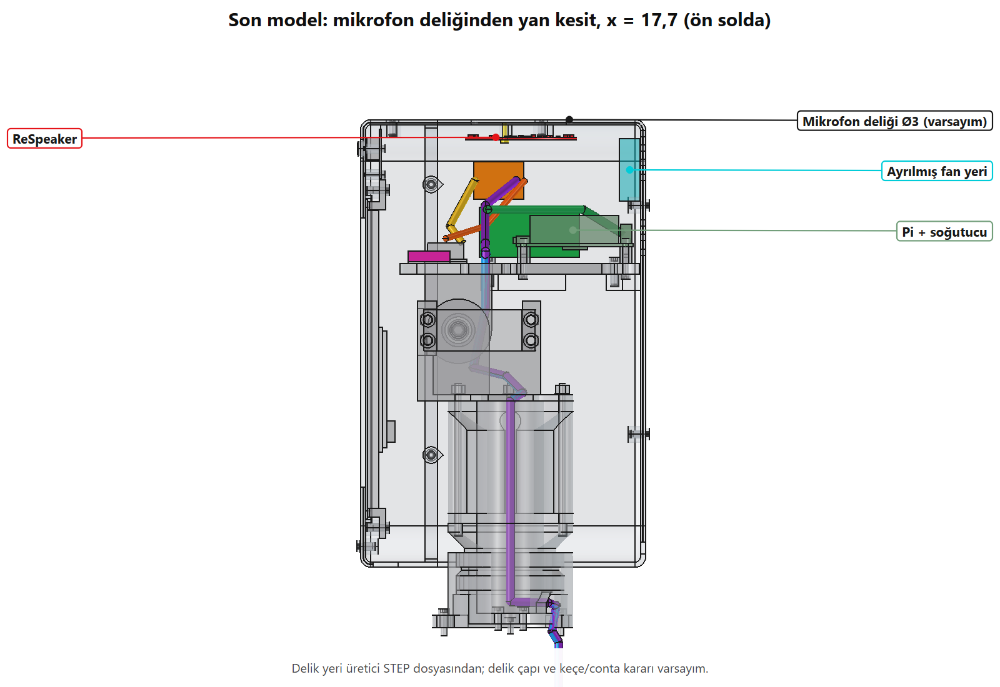
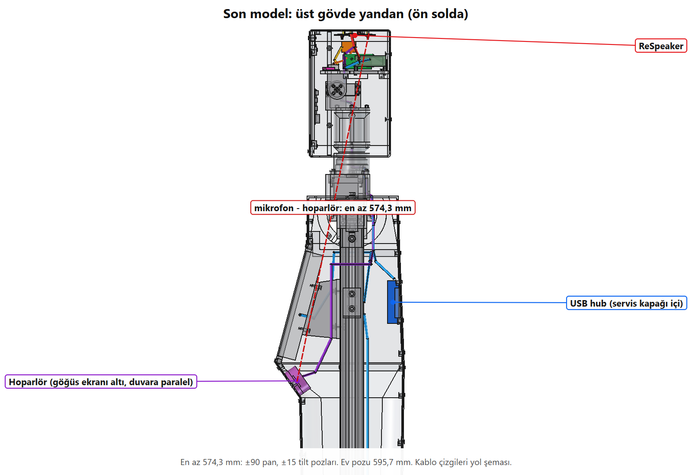
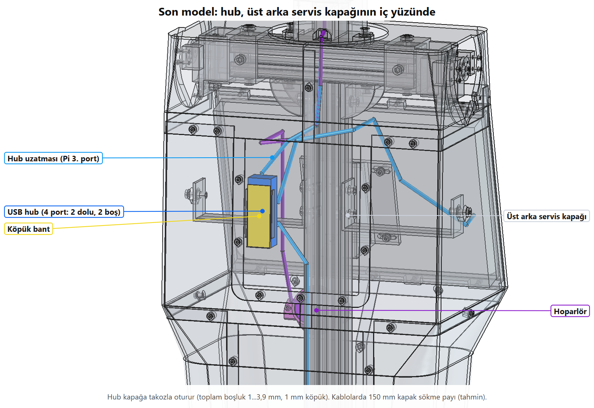

Lale: kafa içi ses ve USB, B + R1
Sayılar uygulama-notu.md ile aynı JSON dosyalarından okunur. 05.11.2026
B + R1 modele işlendi, zincir omuz bölümü hariç koştu. Yeni çakışma yok: kafa içi 0, kabuk içi 0, kabuk × iskelet 0, ev pozu 0, eklem aralığındaki tarama 0 (omuz bölümü eski kayıttan). Boy 1.580,0 mm, 1.177 parça, 25.910,6 g (400 g kablo payı dahil). Kafa grubu 1.570,8 g, tilt payı ±15 3,64, pan payı 2,21, mikrofon-hoparlör en az 574,3 mm, boyun yuva kanalı %44,8, SY8205 × USB 0,00 mm³ ve açıklık 15,45 mm. Yüksüz ızgara devrilme payı 1,517, ev pozu 1,61; eşik 1,5.
Arka kafa kabugu sag, 7,97 mm³ somun, 3,18 mm³ cıvata (x -12,0...-4,0, z -84,39...-81,44). Boss bu işte değişmedi, seçim ölçümleri bu çifti taramamıştı. Zarf varsayım; AI HAT+ modele eklenmedi.Son model








Bağlantılar
| Port | Bağlı |
|---|---|
| Pi 1 | ReSpeaker Mic Array v2.0 |
| Pi 2 | USB ses kartı (uzatma + L dirsek) |
| Pi 3 | Hub (hub 130 mm + uzatma) |
| Pi 4 | Kafa ekranı dokunmatik |
| Hub 1 | Göğüs ekranı dokunmatik |
| Hub 2 | ESP32 |
| Hub 3 | Boş |
| Hub 4 | Boş |
Kablolar
Yollar şema, sipariş boyu yol × 1,25, kapağa bağlı kablolarda +150 mm (tahmin). Çaplar tahmini.
| Kablo | Nereden, nereye | Yol mm | Sipariş mm | Kapak payı mm | Listede |
|---|---|---|---|---|---|
| Hub uzatması | Pi 3 → hub (boyundan, koridor z ≈ -14) | 617 | 920 | 150 | Hub 130 mm + ~1 m USB-A uzatma: listede yok |
| Ses kartı uzatması | Pi 2 → L dirsek → ses kartı | 217 | 270 | - | ~30 cm USB-A uzatma + L dirsek: listede yok |
| Dizi USB | Pi 1 → ReSpeaker micro B | 85 | 110 | - | Kısa micro USB: listede yok |
| Göğüs dokunmatik USB | Hub → göğüs ekranı TOUCH | 395 | 640 | 150 | v4 satır 58, 2 m: yeter |
| ESP32 USB | Hub → ESP32 (taban), VBUS'ta 1N5819 | 971 | 1.360 | 150 | v4, 2 m: yeter |
| Hoparlör | PAM8403 → hoparlör (boyundan) | 823 | 1.030 | - | ~1,1 m: robot için listede yok |
| 3,5 mm → PAM | Ses kartı L 3,5 mm → PAM girişi | 36 | 40 | - | L 3,5 mm fişli kısa kablo: listede yok |
| PAM 5 V | D24V50F5 → PAM (VARSAYIM) | 64 | 80 | - | Sarf; besleme noktası doğrulanmadı |
| HDMI | Pi HDMI 1 → göğüs ekranı (boyundan) | 757 | 950 | - | v4, 1,5 m: yeter |
| 12 V | Taban → göğüs ekranı (boyundan) | 1.376 | 1.720 | - | Değişmedi |
| Kafa içi kablo | Nereden, nereye | Yol mm | Boy mm | Kalan mm |
|---|---|---|---|---|
| HDMI (şerit, 2 lehimsiz fiş) | Pi HDMI 0 → kafa ekranı | 254 | 300 | 46 |
| Touch USB (kutu kablosu) | Pi 4 → kafa ekranı TOUCH | 217 | 350 | 133 |
| Power USB (30 cm, A ucu kesik) | SY8205 → kafa ekranı Power | 114 | 300 | 186 |
Listede olmayan 6 kalem: USB-A uzatma ~30 cm (Pi → ses kartı), USB-A uzatma ~1 m (Pi → hub), L USB-A dirsek, kısa micro USB (dizi), hoparlör kablosu ~1,1 m, L 3,5 mm fişli kısa kablo.
Önceki, beklenen, ölçülen
Önceki sütunu: secenekler.md (Bugün sütunu), lale158/ikinci-kontrol.json, lale158/ikinci/ivme-qled.json, 04.11 tarihli lale158-kontrol.json değerleri. 0,799 mm³ önceki ajanın 16:20 bildirimi; dosyası yok, düzeltme öncesi kafa-analiz.json üzerine yazıldı. Beklenen sütunu secenekler.md B değerleri ve iş tanımındaki eşikler; "-" olan satırda hedef yok, önceki değerle karşılaştır.
| Ölçüt | Önceki | Beklenen | Ölçülen | Kaynak |
|---|---|---|---|---|
| Toplam boy, mm | 1.580,0 | en çok 1.580,0 | 1.580,0 | lale158/lale158-kontrol.json toplam_boy_mm |
| Parça sayısı (kablo gösterimi hariç) | 1.168 | - | 1.177 | lale158/lale158-kontrol.json parca |
| Toplam kütle, g (400 g kablo payı dahil) | 25.836,9 | - | 25.910,6 | kafa-yerlesim/uygulama-ivme.json ev.kutle_g |
| Kafa grubu kütlesi, g | 1.531,3 | 1.570,8 | 1.570,8 | kafa/kafa-analiz.json tork.tilt.kutle_g |
| Tilt payı, ±15 | 3,89 | 3,64 | 3,64 | kafa/kafa-analiz.json tork.tilt.pay_tilt15 |
| Tilt statik, ±15, kg·cm | 0,083 | 0,152 | 0,152 | kafa/kafa-analiz.json tork.tilt.statik_tilt15_kgcm |
| Pan payı | 2,20 | 2,21 | 2,21 | kafa/kafa-analiz.json tork.pan.pay_iki_hane |
| Mikrofon-hoparlör, tüm pozlarda en az, mm | yok (dizi modelde değildi) | 574,3 | 574,3 | kafa-yerlesim/uygulama-olcum.json mic_hoparlor.poz_min_mm |
| Dizi-hoparlör, ev pozu, mm | yok | 595,7 | 595,7 | kafa-yerlesim/uygulama-olcum.json mic_hoparlor.ev_min_mm |
| Boyun yuva kanalı doluluğu | %44,8 | %44,8 | %44,8 | kafa-yerlesim/uygulama-olcum.json boyun.gecis |
| SY8205 × USB çakışması, mm³ | 249,7 | 0 | 0,00 | kafa-yerlesim/uygulama-olcum.json kablo_sy8205 + kafa_ici_qled_kablo |
| SY8205 × boyuna inen USB açıklığı, mm | - | 15,45 | 15,45 | kafa-yerlesim/uygulama-olcum.json kablo_sy8205[Hub uzatmasi] |
| Kafa × kol, çakışma (tilt ±13, ±15) | 0 | - | 0 | kafa-yerlesim/uygulama-ikinci.json kafa |
| Kafa × kol, en yakın, mm | 11,046 | - | 11,046 | kafa-yerlesim/uygulama-ikinci.json kafa |
| Tilt ilk çakışma, derece | -17 / +18 | - | -17 / +18 | kafa-yerlesim/uygulama-ikinci.json tilt |
| Kol, S2 0-3 çakışma, sağ + sol | 684 + 684 | - | 684 + 684 | kafa-yerlesim/uygulama-ikinci.json kol |
| Kol, S2 5 en yakın, mm | 1,358 | - | 1,358 | kafa-yerlesim/uygulama-ikinci.json kol |
| Çatal, S2 5 en yakın, mm | 12,306 | - | 12,306 | kafa-yerlesim/uygulama-ikinci.json catal |
| Devrilme payı, ev pozu, rampa 5° | 1,62 | en az 1,5 | 1,61 | taban/taban-analiz.json robot.pozlar[ev].rampa5.pay_geri |
| Devrilme payı, ızgara, yüksüz, rampa 5° | 1,523 | en az 1,5 | 1,517 | kafa-yerlesim/uygulama-ivme.json izgara_yuk_0g.a_sinir_pay15 |
| Tarama, eklem aralığında çakışma (omuz bölümü eski) | 0 | 0 | 0 | carpisma-sonuc.json toplam.eklem_araliginda |
| Kafa iç çakışma (0,799 mm³ dahil, eşik 0,5 mm³) | 1 (0,799 mm³, düzeltme öncesi) | 0 | 0 | kafa/kafa-analiz.json statik |
| Dizi × arka kabuk, eşiksiz kesişim, mm³ | 0,799 | 0 | 0,0042 | kafa-yerlesim/uygulama-olcum.json dizi.kabuk_kesisim_mm3 |
| Kabuk iç çakışma / kabuk × iskelet | 0 / 0 | 0 / 0 | 0 / 0 | kabuk/kabuk-analiz.json cakisma, iskelet_cakisma |
Yeni parça ölçümleri
- Dizi: PCB üstü y 92,62 (hedef 92,62), bas çerçevesi kutusu x 4,63...75,59, z -65,82...5,92; kabuk ve kendi vidaları dışında en yakın parça yüz kabuğu, 7,78 mm; arka kabuk tek katı, geçerli. Eşiksiz dizi × kabuk kesişimi 0,0042 mm³: 0,5 mm³ eşiğinin altında, temas büyüklüğünde; konumu ayrıca ölçülmedi.
- Ses kartı: y 35,0...59,0, z -58,0...-10,0; kabuğa 1,00 mm, PAM'e 4,00 mm. PAM8403: y 63,0...81,0, z -31,5...-7,5; kabuğa 1,00 mm.
- MAX98357A: modelde 0 parça,
kafa-bom.csv'de yok. - Hub: x 35,0...60,0, y 1.085,0...1.157,0, z -78,48...-59,48 (global). Kapak dayamasına 0,25 mm, göğüs bandına 3,17 mm, kapak somununa 7,00 mm. 40 mm fiş payı: gövde braketine 4,48 mm, direğe 15,03 mm, çakışma 0. 2 port boş.
- Hoparlör: duvar merkezi (45,0; 982,5; 100,77), eksen yatayın 35,0° altında, kama yok. Duvara 0,497 mm; ön halka duvara 0,196 mm, göğüs bandına 5,521 mm.
- USB koridoru: tablaya 2,50 mm, Pi'ye 11,73 mm. Hub kablosu boyundan iniyor, göğüs dokunmatiği ve ESP32 kablosu kafaya girmiyor.
- Dizi USB'sinin güç kablolarına uzaklığı: SY8205 40,82, D24V50F5 120,78, TVS 55,36, PAM 5 V 129,79, hoparlör kablosu 89,54 mm.
- Kablo tüpü × parça (
lale158-kontrol.json): Hub uzatması Pi 2,9, mil 1,2; dizi USB Pi 11,8; ses kartı uzatması Pi 2,5; 3,5 mm PAM 2,8 mm³. Port ucu ve mil temasları şema kaynaklı, HDMI ve 12 V satırları önceki koşuyla aynı. SY8205 listede yok. - Devrilme, ızgara, rampa 5° (a_sınır, pay 1,5): yüksüz 1,517; elde 100 g 1,477 (önceki 1,482); elde 500 g 1,327 (önceki 1,331). Elde yük bu işin dışında, eşik altı değerler önceki modelde de vardı. Düz zeminde 1,8 m/s² fren payı yüksüz 1,746 (önceki 1,751). Ev pozu kütle 25.910,6 g, AM y 525,62 (önceki 25.836,9; 524,01).
- AI HAT+ yeri: CAD'de yok, eklenmedi. Dizi ile zarf arası 24,97 mm (seçimde 24,97). Zarf, yeni parçalardan hiçbirine girmiyor; yalnız mevcut arka üst cıvata boss'una giriyor (üstteki uyarı).
Baskı
KL.baski_analiz (uygulama-baski.json): üst arka kapak hub takozuyla 0 destek sorunu, 168,3 × 150,0 × 12,5 mm, 81,0 g, 1,77 sa. Hoparlör kabı ikiye bölününce sorun kalktı: ön halka 0, flanşlı arka 0 destek sorunu (2,7 + 7,7 g, varsayım kap). Orta bant sağ 0 destek sorunu, ofset uyarısı 9, 259,0 g. Farklı sonuç: kabuk_montaj.py'nin kendi analizi kapak için z 2,5'te 19.667,7 mm² ile 1 sorun yazıyor (kabuk-analiz.json). Katman katman tanı (uygulama-tani.json) bu katmanın bir alttaki katmana ofsetsiz taşmasını 5,01 mm² buldu, ofsetli açık alan yok; bu yüzden hesap artığı olarak değerlendirdim. Analiz kodunu değiştirmedim, deneme baskısı kesin söyler.
5 V ve elektrik planı
- Çelişki yok, doğrulama da yok.
elektrik.mdsatır 21 PAM8403 besleme noktası ve akımı için "doğrulanmadı" diyor; satır 39 D24V50F5'i "Pi + diğer kafa yükleri" diye tanımlıyor; satır 315 amfiyi kafa yüküne sayıyor. Bu yüzden PAM 5 V D24V50F5'ten modellendi, varsayım olarak işaretli, elektrik planı değişmedi. Satır 301'deki "USB ses kartı ── PAM8403" sinyal yolu olarak okundu. - Akım bütçesi (hesap, ölçüm değil): Pi hattı 2,67 A (5 A'nın %53'i, satır 24). 3 W hoparlör, verim %85 varsayımıyla PAM tepesi 0,71 A. Satır 364'teki normal amfi 0,5 W bütçeye girmişse tepede 3,28 A (%66), girmemişse 3,38 A (%68). 2,67 A'nın kalem dökümü dosyada yok, hangisi olduğunu söyleyemem. Normal kullanımda 2,67 A aynı kalır; Pi tam yük tepesi bu hesapta yok, satır 22 de tepeyi "hesaplanmadı" diyor.
elektrik.mdşimdi modelin gerisinde (salt okunur, değiştirmedim): satır 12, 30, 58, 242, 272, 301, 481 hâlâ hub'ın kafa içi yerini açık, boyunda ESP32 USB + göğüs dokunmatik yazıyor. Modelde boyun demeti 12 V + tilt + HDMI + hub uzatması + hoparlör.- Hub USB'den besleniyor, yeni yol ~1,1 m. Göğüs dokunmatiği ve ESP32 tek hub kablosuna bağlı; hub girişindeki gerilim ölçülmedi.
Atlananlar
carpisma_kosomuz bölümü ve omuz regresyonu koşmadı (karar Ahmet Yorulmaz'da, ~4,8 saat).carpisma-sonuc.jsonomuz sonucu koşu 20261103-215611'ten, yeni kabuktan önce; dosyadatek_kosufalse. Kol × kabuk ince ızgarasıuygulama-ikinci.jsoniçinde yeni modelle koştu.kafa_gorsel,kabuk_gorsel,montaj_gorsel, modül*_rapor.pybetikleri veyerlesim_kontrol.pykoşmadı:kabuk/gorsel/*.pngvemontaj/yerlesim-kontrol.jsondeğişmedi, modülrapor.htmldosyaları eski.montaj_gorselkoşmadığı içinrobot-montaj.FCStdiçinde eklem görünüm nesneleri yok.lale158-regresyon.json,2209b-cad-sonuclar.json,lale158/rapor.html,ikinci-kontrol.json,ikinci/ivme-qled.jsonyeniden üretilmedi: önceki değerleri taşıyor. Y2b-baskı listesi veplanlama/baski-listesi.mdgüncellenmedi (yazma sınırı).- Hava akışı, ısı ve akustik yeniden hesaplanmadı; kablo bükümü modellenmedi.
Kalan varsayımlar
- ReSpeaker kütlesi 30 g, mikrofon deliği Ø3, M2 × 8 PT vida; LED dışarıdan görünmeyebilir, ışık borusu yok. Dizi geometrisi üretici STEP'i.
- Ses kartı 48 × 24 × 11, USB-A fişi, L dirsek, uzatma dişi ucu, L 3,5 mm fiş zarfları ve kütleleri. Ürün seçilmedi.
- PAM8403 modeli 24 × 18 × 5 (sayfa 21 × 18 × 3,4), 3 g; 5 V besleme noktası varsayım.
- Hoparlör kütlesi 27 g başka üründen. Kap varsayım: ürün elde görülmedi, arka tüp açık çizimde, hoparlörü arkadan tutan yüzey ve kelepçe modelde yok.
- Hub 72 × 25 × 19, 25 g, port yönü varsayım. Bağlantı köpük bant + 2 yan dayama; ayrı tutucu yok. Kablolara kapak söküm payı 150 mm tahmin. Fiş payı 40 mm tahmin.
- Kablo yolları şema, çap ve g/m tahmin. Pi USB ağzı konumu ±2 mm varsayım. Kablo kütlesi 59 g payının üstüne eklendi, biraz kötümser.
- AI HAT+ 65 × 56,5, yığın 16 mm, 30 g: CAD'de yok. Altıncı USB cihazı bilinmiyor; hub'daki 2 port boş.
Açık işler ve kararlar
- Omuz bölümü ve omuz regresyonu (~4,8 saat) koşulsun mu? Yeni parçalar omuza yakın değil, ama sonuç dosyası bu haliyle karışık.
- AI HAT+ zarfı × arka üst cıvata boss'u: HAT gelince gerçekse boss mu taşınır, HAT yönü mü değişir? Zarf ölçüsü doğrulanmadı.
- Listede olmayan 6 kablo kalemi v4'e eklensin mi? Liste bu işte değişmedi.
- Altıncı USB cihazı: kafadaysa B zayıflar (
secenekler.md). - PAM 5 V: D24V50F5 onaylanırsa
elektrik.mdgüncellenmeli; akım ölçülmeli. elektrik.mdboyun ve hub satırları ile baskı listesi yeni düzene göre güncellensin mi? Kapak hub takozlu, 2 yeni kap parçası var.- Efe teyidi: boyun demeti değişti; önceki teyit maddesi HDMI + göğüs dokunmatikti.
- Ölçülmesi gerekenler (
secenekler.md§7) açık: Ø3 deliklerin akustiği, hoparlör-mikrofon yankısı, servo gürültüsü, hub girişi gerilimi.
Ne değişti
arayuz.py: yeniSES_USB(dizi, ses kartı, PAM, koridor, hoparlör, hub, Pi portları, kablo payı).kafa/kafa10_lib.py,kafa/kafa_lib.py,kafa/kafa_parcalar.py: üretici STEP'inden ReSpeaker, tavanda 4 Ø3 delik ve 3 boss, 3 M2 × 8 PT vida; MAX98357A ve kafa içi hub çıktı; ses kartı ve PAM sol duvarda. Önceki ajanın 0,799 mm³ boss düzeltmesi korundu ve doğrulandı.kafa/kafa_montaj.py: kablo ve fiş kütleleri tilt ve pan hesabına nokta kütle; ±15 payı raporlanıyor.kabuk/kabuk_parcalar.py: orta bant sağ duvara hoparlör (19 Ø3,5 delik, 2 boss), kap iki parça (ön halka + flanşlı arka), üst arka kapağa hub takozu + 2 yan dayama, köpük bant.lale158/kablo_yolu_ekran.py: B yolları, koridor, kapak söküm payı, kafa içi kablo kütlesi.kafa-yerlesim/uygulama_olc.py(bu turda: eşiksiz dizi kesişimi eklendi, AI HAT+ zarfıyerlesim_libile aynı yüksekliğe indirildi),uygulama_gorsel.py(bu turda: göğüs dokunmatik kablosu çizime eklendi),uygulama_baski.py, yeniuygulama_ivme.py,uygulama_tani.py,uygulama_rapor.py,uygulama_metin.py.- Bu turda model kaynak dosyalarına dokunulmadı: gereksinimler kaynakta tek tek kontrol edildi, eksik çıkmadı.
secenekler.mdbaşına seçim satırı eklendi. Üretilen model dosyaları: kafa, kabuk, montaj, taban FCStd + STEP + BOM + analiz JSON.
Koşular
| Koşu | Üretilen dosya |
|---|---|
kafa/kafa_montaj.py | kafa/kafa-analiz.json, kafa-bom.csv, kafa-montaj.FCStd, .step, kafa-zarf.brep |
kabuk/kabuk_montaj.py | kabuk/kabuk-analiz.json, kabuk-bom.csv, kabuk-montaj.FCStd, .step |
montaj/ana_montaj.py (iki kez; ikincisi çarpışmadan sonra) | montaj/montaj-analiz.json, robot-bom.csv, robot-montaj.FCStd, .step |
lale158/lale158_kontrol.py (kablo yolu dahil) | lale158/lale158-kontrol.json |
kafa-yerlesim/uygulama_olc.py | kafa-yerlesim/uygulama-olcum.json |
kafa-yerlesim/uygulama_baski.py | kafa-yerlesim/uygulama-baski.json |
kafa-yerlesim/uygulama_tani.py (betiğin scratchpad kopyasıyla koştu) | kafa-yerlesim/uygulama-tani.json |
carpisma_kos.py statik kol_sag kol_sol kolkol kafa_sabit kafa_sag kafa_sol taban (koşu 20261105-185759) | carpisma-bolum/*.json (omuz hariç), carpisma-sonuc.json |
taban/taban_montaj.py | taban/taban-analiz.json, taban-bom.csv, taban-montaj.FCStd, .step |
lale158/ikinci_kontrol.py, IK_CIKTI ile: model, tilt, kafa, catal, kol | kafa-yerlesim/uygulama-ikinci.json (ikinci-kontrol.json önceki kayıt olarak duruyor) |
kafa-yerlesim/uygulama_ivme.py (planlama/y2/Y2b-ivme.py kopyası, yalnız yol farklı) | kafa-yerlesim/uygulama-ivme.json |
kafa-yerlesim/uygulama_gorsel.py | kafa-yerlesim/gorsel/SON-*.png |
kafa-yerlesim/uygulama_rapor.py | uygulama-notu.md, rapor.html |